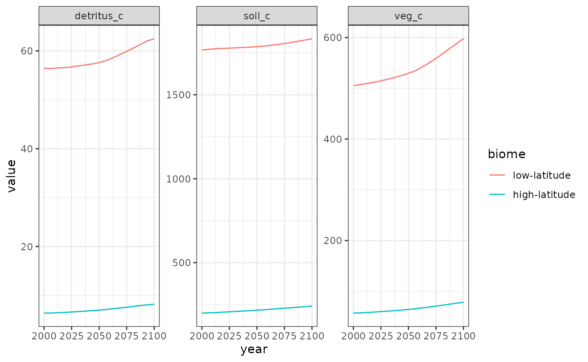
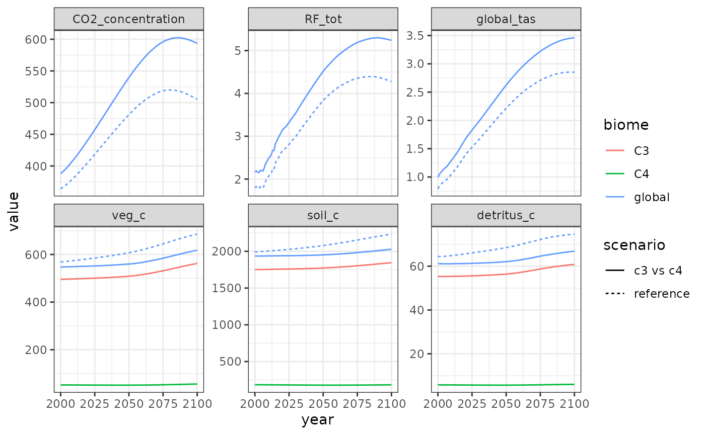

Running Hector with multiple biomes
R
Alexey Shiklomanov
2019-06-27
Source:vignettes/articles/ex_multiple-biomes.Rmd
ex_multiple-biomes.RmdBy default, Hector’s carbon cycle model treats the entire land surface as a single, homogeneous ecosystem. However, it is possible to introduce some land surface heterogeneity by splitting the land surface into several different biomes with distinct parameters. In this vignette, we show two examples of performing multi-biome analyses with Hector.
This vignette assumes some familiarity with the Hector model and its R interface. For help on the former, consult the Hector manual, and on the latter, see the introductory vignette.
Before we begin, let’s load the R package we will need: the
hector package to interact with Hector, and the
ggplot2 package for plotting.
Example 1: Accelerated high-latitude warming
Observational and modeling studies have found that high-latitude ecosystems, particularly in the Northern Hemisphere, are warming significantly faster than the global average. In this example, we will explore the implications of this effect with Hector.
First, let’s run a reference case.
ssp245 <- system.file("input", "hector_ssp245.ini", package = "hector")
core <- newcore(ssp245, suppresslogging = TRUE)
invisible(run(core, 2100))
result_vars <- c(CONCENTRATIONS_CO2(), RF_TOTAL(), GLOBAL_TAS(),
VEG_C(), SOIL_C(), DETRITUS_C())
reference_results <- fetchvars(core, 2000:2100, result_vars, scenario = "reference")Now, let’s redo the run, but accounting for accelerated high-latitude
warming. To do this, we will use the split_biome()
function, which takes an existing Hector biome and splits it up into an
arbitrary number of new biomes, partitioning the C pools and
initializing parameters accordingly. For the purposes of this example,
let’s assume that high latitudes have ~10% of the world’s vegetation and
detritus carbon and ~40% of world’s soil carbon, and that high-latitudes
are warming 2.5x faster than the global average.
split_biome(core, "global", c("low-latitude", "high-latitude"),
fveg_c = c(0.9, 0.1),
fdetritus_c = c(0.9, 0.1),
fsoil_c = c(0.6, 0.4),
warmingfactor = c(1, 2.5))
invisible(reset(core))
invisible(run(core, 2100))## Auto-resetting core to -1
warming_results <- fetchvars(core, 2000:2100, result_vars, scenario = "warming")Now, let’s plot the results.
plot_data <- rbind(reference_results, warming_results)
plot_data$variable <- factor(plot_data$variable, result_vars)
ggplot(plot_data) +
aes(x = year, y = value, color = scenario) +
geom_line() +
facet_wrap(vars(variable), scales = "free_y") +
theme_bw()Hector results with vs. without accelerated high-latitude warming.
The results show that accelerated high-latitude warming induces a positive global feedback in Hector: the warmer high-latitudes respire carbon from soil and detritus at a faster rate, which leads to higher CO2 concentrations and further warming.
We can look at these results in more detail by examining the
biome-specific pools and fluxes via the optional biome
argument to Hector’s identifier functions
(e.g. VEG_C()).
warming_details <- fetchvars(core, 2000:2100,
c(VEG_C("low-latitude"), VEG_C("high-latitude"),
DETRITUS_C("low-latitude"), DETRITUS_C("high-latitude"),
SOIL_C("low-latitude"), SOIL_C("high-latitude")),
scenario = "warming")
head(warming_details)## scenario year variable value units
## 1 warming 2000 low-latitude.veg_c 505.9479 Pg C
## 2 warming 2001 low-latitude.veg_c 506.2329 Pg C
## 3 warming 2002 low-latitude.veg_c 506.5745 Pg C
## 4 warming 2003 low-latitude.veg_c 506.9243 Pg C
## 5 warming 2004 low-latitude.veg_c 507.3095 Pg C
## 6 warming 2005 low-latitude.veg_c 507.6409 Pg CFor plotting, let’s split up the variable column into
its components – biome and variable.
variable_split <- strsplit(warming_details$variable, ".", fixed = TRUE)
warming_details$biome <- factor(vapply(variable_split, "[[", character(1), 1),
c("low-latitude", "high-latitude"))
warming_details$variable <- vapply(variable_split, "[[", character(1), 2)
ggplot(warming_details) +
aes(x = year, y = value, color = biome) +
geom_line() +
facet_wrap(vars(variable), scales = "free_y") +
theme_bw()
Example 2: C3 and C4 plants
We can conduct a similar experiment to the one above by looking at the differential impact of CO2 fertilization on C3 and C4 plants. Specifically, C4 plants possess a special mechanism for concentrating CO2 inside their leaves, thereby reducing their sensitivity to changes in atmospheric CO2. Although this makes C4 plants more efficient (particularly in hot and dry environments), this also means that they should have a reduced CO2 fertilization effect compared to C3 plants.
In Hector, the CO2 fertilization effect is controlled by
the parameter \(\beta\)
(BETA()). In this example, we will create two “biomes,”
corresponding to C3 and C4 plants, each with different
BETA() values, and will compare model outputs from this
special case against a reference case (which we can recycle from the
reference_results object in the previous example). For the
purposes of this example, we will assume that ~10% of the world’s
terrestrial carbon is associated with C4 plants, and that the
CO2 fertilization effect for C4 plans is half as strong as
that of C3 plants.
core <- newcore(ssp245, suppresslogging = TRUE)
split_biome(core, "global", c("C3", "C4"),
fveg_c = c(0.9, 0.1),
beta = c(0.36, 0.18))
invisible(reset(core))
invisible(run(core, 2100))## Auto-resetting core to -1
c4_results <- fetchvars(core, 2000:2100, result_vars, scenario = "c3 vs c4")
c4_results_biome <- fetchvars(core, 2000:2100,
c(VEG_C("C3"), VEG_C("C4"),
DETRITUS_C("C3"), DETRITUS_C("C4"),
SOIL_C("C3"), SOIL_C("C4")),
scenario = "c3 vs c4")
variable_split <- strsplit(c4_results_biome$variable, ".", fixed = TRUE)
c4_results_biome$biome <- vapply(variable_split, "[[", character(1), 1)
c4_results_biome$variable <- vapply(variable_split, "[[", character(1), 2)
c4_results$biome <- "global"
reference_results$biome <- "global"
plot_data <- rbind(reference_results, c4_results, c4_results_biome)
plot_data$variable <- factor(plot_data$variable, result_vars)
ggplot(plot_data) +
aes(x = year, y = value, linetype = scenario, color = biome) +
geom_line() +
facet_wrap(vars(variable), scales = "free_y") +
theme_bw()
Similarly to accounting for high-latitude warming, accounting for the reduced CO2 fertilization effect on C4 plants results in a slightly warmer and CO2-rich atmosphere.